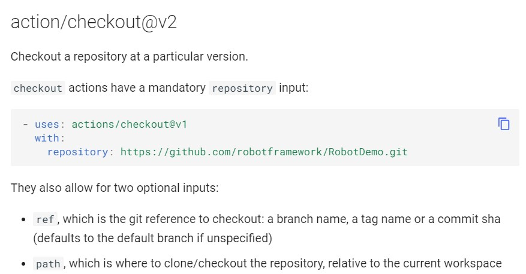

Finding and customizing plugins¶
Plugins are the building blocks that power your workflow. A workflow can contain generators and providers plugins created by the community, or you can create your own plugins. This guide will show you how to discover, use and customize plugins.
Overview¶
TBD
Browsing plugins¶
You can search and browse plugins directly in this documentation, in the Generators and Providers sections.
Adding a plugin to your workflow¶
A plugin’s listing page includes the plugin’s version and the workflow syntax required to use the plugin. To keep your workflow stable even when updates are made to a plugin, you can reference the version of the plugin by specifying the tag number in your workflow file.
-
Navigate to the plugin you want to use in your workflow
-
Under “Example”, click to copy the workflow syntax.

-
Paste the syntax as a new step or job in your workflow. For more information, see “Workflow syntax for OpenTestFactory Orchestrator.“
-
If the plugin requires you to provide inputs, set them in your workflow. For information on inputs a plugin might require, see “Using inputs and outputs with a plugin.“
Using inputs and outputs with a plugin¶
A plugin often accepts or requires inputs and generates outputs that you can use. For example, a plugin might require you to specify a path to a file, the name of a label, or other data it will use as part of the plugin processing.
To see the inputs and outputs of a plugin, or the plugin.yaml in the root of the
plugin’s repository.
In this example plugin.yaml, the inputs keyword defines a required input called
file-path, and includes a default value that will be used if none is specified.
The outputs keyword defines an output called results-file, which tells you where
to locate the results.
name: 'Example'
description: 'Receives file and generates output'
inputs:
file-path: # id of input
description: "Path to test script"
required: true
default: 'test-file.js'
outputs:
results-file: # id of output
description: "Path to results file"
Next steps¶
To continue learning about the OpenTestFactory Orchestrator, see “Essential features of OpenTestFactory Orchestrator.“